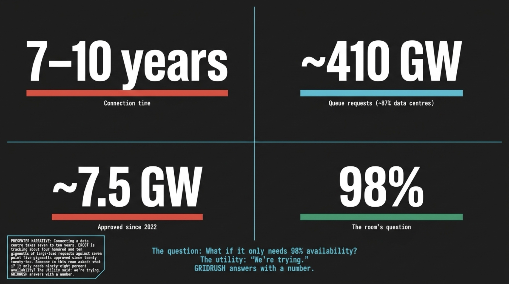

cd gridrush && python3 web/live_server.py → opens
http://127.0.0.1:8767/ (a separate page: the agent proposes, the 8,760-hour verifier judges,
score climbs $0 → $279.9M in ~11 s; press Run again at any time).8767 URL is only this live page — it is not the dashboard and it stops
working when the process is closed.